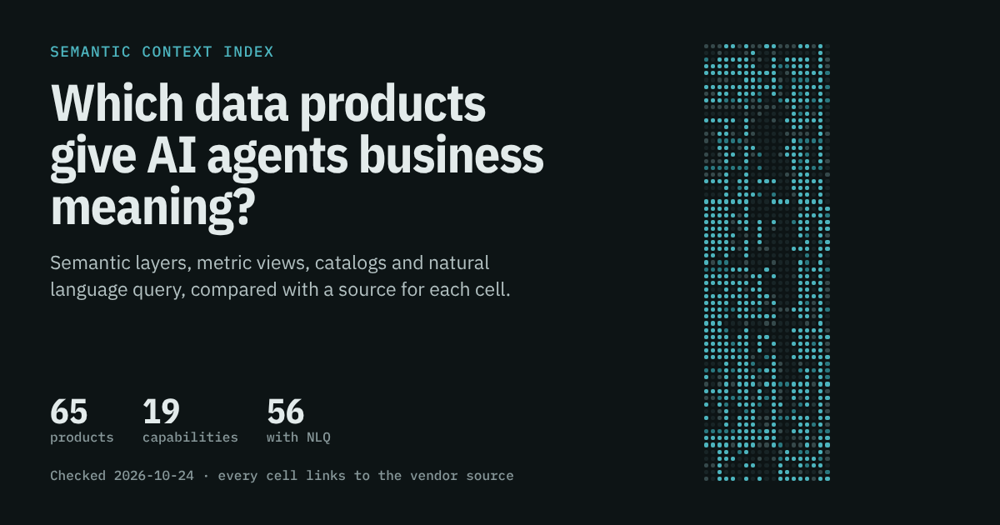
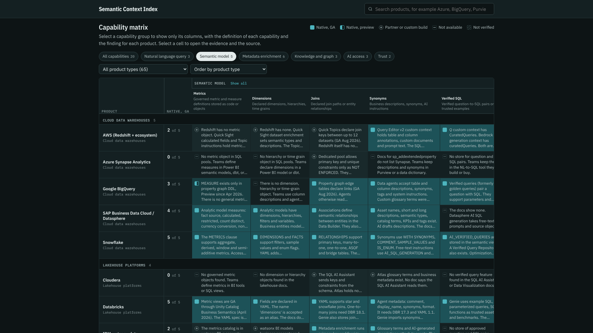
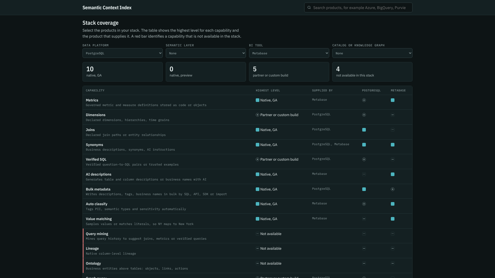

No third-party tools. No custom work. I scored 65 products on 19 semantic capabilities, and the results surprised me.
Your AI agent can reach your data. It still can't tell you what revenue means.
57 of 65 data products now ship an MCP server. Only 18 let you store a single verified query. I mapped the gap so you don't have to.

Semantic Context Index: 65 products, 19 capabilities, one heatmap
Ask your shiny new data agent a simple question: "What was revenue last quarter?"
It answers in two seconds. The SQL looks clean. The number is wrong.
Revenue at your company excludes refunds. It counts the order date, not the ship date. It lives as a measure in a Power BI model, a metric in dbt, and a sentence in a Confluence page nobody updated since 2024. The agent saw none of that. It saw a column called amount and did its best.
I've built a few text-to-SQL agents on Snowflake and Denodo. Every project hit the same wall around week three. The model works. The plumbing works. The answers drift, because the agent has no idea what the business means by its own words.
The fix has a name. People call it a semantic layer, an ontology, a knowledge graph, or "context engineering" if they want a raise. The idea is the same. You give the agent governed definitions, trusted examples, and real descriptions, so it stops guessing.
Then you hit the second wall. Which of that does your platform already give you?
Nobody could answer that question
I tried. I wanted one page that said "Snowflake gives you metrics and verified queries out of the box, BigQuery gives you X, Fabric gives you Y, and for the rest you need Cube or dbt."
That page didn't exist.
Vendor docs describe features in their own words. Semantic view, metric view, analytic model, data module, topic, universe, worksheet. Release notes bury the difference between GA and preview. Products get renamed every few months. Comparison blogs go stale the week they publish, and most of them come from a vendor with a horse in the race.
So I built the page. It's called the Semantic Context Index. It's free, and every cell links to its source.
What's inside
The index compares 65 products on 19 capabilities. That makes 1,235 cells, backed by 1,326 source links.
The products cover the stack an analytics agent touches:
- Data platforms: Snowflake, Databricks, BigQuery, Microsoft Fabric, Redshift, Azure Synapse, Oracle, SAP Business Data Cloud, Teradata, Postgres, ClickHouse, MongoDB, and more
- Federation: Denodo, Dremio, Starburst, and Timbr
- Semantic layers: dbt, Cube, AtScale, Looker, Malloy, Wren AI, and Honeydew
- BI tools: Power BI, Tableau, Qlik, ThoughtSpot, Sigma, Strategy, Cognos, Omni, Hex, and more
- Catalogs: Unity Catalog, Purview, Snowflake Horizon, Google Knowledge Catalog, Alation, Atlan, Collibra, DataHub, and Informatica
- Knowledge graphs: Neo4j, Stardog, RelationalAI, and Palantir
Each cell gets one of five levels:
- Native, GA: the vendor ships it, and the docs show no preview label
- Native, preview: the docs call it preview or beta
- Partner or custom build: you need another product or your own code
- Not available: the docs don't include it
- Not verified: I couldn't find a primary source, so I say so
That last level matters more than it looks. A blank cell that pretends to know is worse than a cell that admits it doesn't.
The 19 capabilities, and why each one exists
I grouped them by the job they do for an agent.
Semantic model. This is the dictionary. Metrics (governed definitions, not ad hoc SQL), dimensions, joins, synonyms, and verified SQL. Verified SQL means trusted question-and-answer pairs the agent can reuse. If you only pick one capability to care about, pick this one. A good example query beats a page of instructions.
Metadata enrichment. This is the grunt work you'll spend most of your time on.
AI-generated descriptions, bulk metadata writes, auto-classification, value matching, query-history mining, and column-level lineage. Value matching sounds boring until your agent writes WHERE state = 'New York' and your table stores NY.
Knowledge and graph. Ontology (business entities above tables, like customers, contracts, and the links between them), graph query, and vector search.
AI access. A first-party NL-to-SQL feature, an MCP server so external agents can connect, and evals that test accuracy or turn user feedback into verified examples.
Trust. Governance (do semantic objects inherit row and column security?) and an open spec. Can you export your model, or does it live in one vendor forever? The open standard here was Open Semantic Interchange. It entered the Apache Incubator in June 2026 and now goes by Apache Ossie.

Filter the matrix to one capability group to read every finding
What the data says
I expected the big platforms to look similar. They don't. A few findings stood out.
Agents can connect. They still guess.
57 of 65 products ship a native MCP server, in GA or preview. Connecting an agent to your data is close to solved.
Accuracy isn't. Only 18 products store verified SQL at GA. Only 12 model an ontology natively. Only 20 do value matching at GA.
Vendors raced to give agents a door into your data. Far fewer gave them the map.
Half the "AI features" won't say if they're finished
56 products have a first-party natural language query feature. I counted 84 of them in total.
For 29 of those 84, the docs show no GA label and no preview label. I marked them "Unverified." If you're about to put one in front of your CFO, ask the vendor first.
The names won't sit still
In 2026 alone:
- Snowflake Intelligence became Snowflake CoWork.
- Databricks One became Genie, then Genie One.
- Google renamed Dataplex Universal Catalog to Knowledge Catalog.
- Open Semantic Interchange became Apache Ossie.
If your team searches docs with last year's names, you'll find last year's answers.
Preview is doing a lot of work
Microsoft Fabric covers a lot of ground. But 7 of its 19 capabilities are still in preview. Power BI Q&A, the old natural language feature, retires in February 2027. One Microsoft page still says December 2026. I went with the newer Learn pages.
Semantic context does move the needle
The best public number I found came from dbt Labs, so treat it as vendor-run. They asked 11 questions, 20 times each, on an insurance dataset. On the raw schema, plain text-to-SQL scored 64.5% and their Semantic Layer scored 72.7%. After they added three dbt models, the Semantic Layer reached 98.2% with Sonnet 4.6 and 100% with GPT-5.3 Codex. Text-to-SQL reached 90.0% and 84.1%.
Small test. Real signal. Modeling work pays off for both approaches, and the semantic layer pays off more.
The ranking: what you get with no extra tools
I scored each product on one question. How much of the 19 does it give you natively, with no third-party tool and no custom work?
Native GA counts as 1. Native preview counts as 0.5. Partner and custom builds count as zero, because they aren't what the product ships. I left out the catalog rows that belong to a platform, so no vendor counts twice.
| Rank | Product | Score (of 19) |
|---|---|---|
| 1 | Databricks | 17.0 |
| 2 | Snowflake | 16.5 |
| 3 | Alation | 14.5 |
| 4 | Denodo | 14.0 |
| 5 | Timbr | 14.0 |
| 6 | Omni | 13.0 |
| 7 | Qlik | 13.0 |
| 8 | SAP Business Data Cloud | 13.0 |
| 9 | Tableau | 13.0 |
| 10 | dbt Semantic Layer | 12.5 |
Databricks and Snowflake each ship 16 of the 19 as native and GA. Below them the field thins out fast. 17 of the 24 data platforms I checked ship fewer than 10.
Read this as breadth, not quality. A product with a lower score can still be the right call for your stack. Postgres scores low, and you can still run a great agent on it. You'll just build more of the context yourself.
How to use it on your own project
The ranking gets the clicks. The tools on the page do the useful work.
Capability matrix. The default view is a heatmap of every product against every capability. Click a group, like Semantic model, and the matrix narrows to those five columns. Each header shows the definition, and each cell shows the finding in plain words. Click any cell to open the evidence and the source link.
Compare. Pick up to four products and put them side by side. A teal bar marks every capability where they differ. This view settles most "should we use X or Y" debates in about two minutes.
Stack coverage. This is the view I wish I'd had on my last project. Pick your data platform, semantic layer, BI tool, and catalog. The page shows the best level your stack reaches for each capability, and which product supplies it. A red bar marks every gap.
Try Postgres plus Metabase. You'll see 10 capabilities covered natively at GA and four with nothing at all. That's your backlog, written for you.

Stack coverage shows what your stack covers and what you must add
NLQ features. A list of every first-party natural language query feature, with its release status, its output (SQL, DAX, KQL, MQL, Cypher, or a plain answer), and whether you can call it from an API or MCP.
Data catalogs. Two lanes. Platform catalogs like Unity Catalog, Purview, Horizon, and Knowledge Catalog sit on the left. Standalone catalogs like Alation, Atlan, Collibra, and DataHub sit on the right. If most of your data lives on one platform, start on the left. If it's spread out, start on the right.
How I checked it
Every cell comes from a vendor doc, a release note, or an official engineering blog. Before anything went on the page, I set a rule: a wrong claim is worse than a missing one.
Then I ran a separate fact-check on the 10 highest-risk claims and 20 random cells, against primary sources only. It caught real mistakes. Apache Ossie entered the incubator on June 22, not July 10. Tableau's "graph query" turned out to be a metadata lookup API, so I moved it to zero. A dbt benchmark note had its numbers paired wrong. I fixed all ten corrections and published the full report in the repo, along with a link check of every URL.
Five cells still say "Not verified." Three are IBM Cognos, whose AI docs wouldn't load for any tool I tried. Two are Informatica, where the only source was an old sales deck. I'd rather show the gap than fill it with a guess.
Help me keep it honest
This field moves every month. Some cell on the page is already out of date.
If you spot one, open an issue on GitHub with a link to the vendor's docs or release notes. I'll update the cell. Vendors, that includes you. If your product does something I scored as missing, show me the page and I'll fix it.
And if you're about to start a semantic layer, an ontology, or a knowledge graph project, open the Semantic Context Index before your first design meeting. Pick your stack. Look at the red bars. That's the work.
I'd like to hear what you're building on, and what you had to add yourself.
Explore the Semantic Context Index
65 products · 19 capabilities · every cell linked to a source
Need Help Implementing This?
I offer consulting services for Text-to-SQL systems. Let's discuss your requirements.
Schedule a Consultation